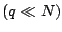

We explore the application of two preconditioning strategies to the FMM. In the first, which was applied to the FMM solution of a multiple scattering problem for the Helmholtz equation in three dimensions, the system was solved using the flexible GMRES algorithm. The choice of the (right) preconditioning matrix was based on GMRES solution of a linear system with an approximation to the matrix that is based on a partitioning that is performed in the FMM itself. We describe details of this iterative technique and its performance on some large multiple scattering problems.
In the second iterative solution, we consider an iterative algorithm of Faul et al. [1] for the solution of the radial basis function (RBF) interpolation problem. In this problem the goal is to construct an interpolating function for a set of scattered data points, with the interpolating function expressed as a sum of RBFs centered at the data points. The iterative algorithm of Faul et al. can be accelerated by the use of the FMM for the matrix vector product required at each step. There however is a precomputation stage that requires the construction of approximate cardinal function interpolants centered at each data point and of its neighbors , that are carefully selected. These interpolants are used to provide a Krylov basis for the iteration. The complexity of these preliminary calculations in Faul et al. is . We provide a modification to this set-up stage and reduce its complexity to linear order. Results will be presented for the interpolation of large data sets in two and three dimensions using multiquadric and polyharmonic radial basis functions.
[1] A. C. Faul, G. Goodsell, M. J. D. Powell, A Krylov subspace algorithm for multiquadric interpolation in many dimensions, IMA Journal of Numerical Analysis 25 (2005) 1-24.